화공기사(구) (2015-03-08 기출문제)
1과목: 화공열역학
1. 혼합물의 융해, 기화, 승화 시 변하지 않는 열역학적 성질에 해당하는 것은?
- 엔트로피
- 내부에너지
- 화학포텐셜
- 엔탈피
(정답률: 70%)

2. 에너지에 관한 설명으로 옳은 것은?
- 계의 최소 깁스(Gibbs) 에너지는 항상 계와 주위의 엔트로피 합의 최대에 해당한다.
- 계의 최소 헬름홀츠(Helmholtz) 에너지는 항상 계와 주위의 엔트로피 합의 최대에 해당한다.
- 온도와 압력이 일정할 때 자발적 과정에서 깁스(Gibbs) 에너지는 감소한다.
- 온도와 압력이 일정할 때 자발적 과정에서 헬름홀츠(Helmholtz) 에너지는 감소한다.
(정답률: 73%)
3. 혼합물에서 과잉물성(excess property)에 관한 설명으로 가장 옳은 것은?
- 실제용액의 물성값에 대한 이상용액의 물성값의 차이다.
- 실제용액의 물성값과 이상용액의 물성값의 합이다.
- 이상용액의 물성값에 대한 실제용액의 물성값의 비이다.
- 이상용액의 물성값과 실제용액의 물성값의 곱이다.
(정답률: 75%)
4. 에탄올과 톨루엔의 65℃ 에서의 Pxy 선도는 선형성으로부터 충분히 큰 양(+)의 편차를 나타낸다. 이렇게 상당한 양의 편차를 지닐 때 분자간의 인력을 옳게 나타낸 것은?
- 같은 종류의 분자간의 인력 ＞ 다른 종류의 분자간의 인력
- 같은 종류의 분자간의 인력 ＜ 다른 종류의 분자간의 인력
- 같은 종류의 분자간의 인력 = 다른 종류의 분자간의 인력
- 같은 종류의 분자간의 인력 + 다른 종류의 분자간의 인력 = 0
(정답률: 58%)
5. 맥스웰(Maxwell)의 관계식으로 틀린 것은?
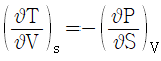
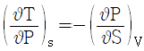
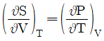
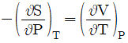
(정답률: 67%)
6. 30℃ 와 -10℃ 에서 작동하는 이상적인 냉동기의 성능 계수는 약 얼마인가?
- 6.58
- 7.58
- 13.65
- 14.65
(정답률: 58%)
7. 초기상태가 300K, 1bar인 1몰의 이상기체를 압력이 10bar가 될 때까지 등온 압축한다. 이 공정이 역학적으로 가역적일 경우 계가 받은 일과 열(W, Q)를 구하였다. 다음 중 옳은 것은? (단, 기체상수는 R (J/molㆍK) 이다.)
- W = 69R, Q = -69R
- W = 69R, Q = 69R
- W = 690R, Q = -690R
- W = 690R, Q = 690R
(정답률: 68%)
8. 560℃, 2atm 하에 있는 혼합가스의 조성은 SO3 10%, O2 0.5%, SO2 1.0%, N2 88.5%이다. 이 온도에서
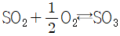
반응의 평형상수는 20 이다. 이 혼합가스에 대한 설명으로 옳은 것은?- 평형에 있다.
- 평형에 있지 않으며 SO3가 생성되고 있다.
- 분해가 일어나고 있다.
- 준평형상태에 있다.
(정답률: 60%)
9. 김박사는 400K 에서 25000J/s 로 에너지를 받아 200K 에서 12000J/s 로 열을 방출하고 15kW 의 일을 하는 열기관을 발명하였다고 주장하고 있다. 김박사의 주장을 열역학 제 1, 2법칙에 의해 평가한 것으로 가장 적절한 것은?
- 이 열기관은 열역학 제 1법칙으로는 가능하나, 제2법칙에 위배되므로 김박사의 주장은 믿을 수 없다.
- 이 열기관은 열역학 제 1법칙으로는 위배되나, 제2법칙에 가능하므로 김박사의 주장은 믿을 수 없다.
- 이 열기관은 열역학 제 1, 2법칙에 모두 위배되므로 김박사의 주장은 믿을 수 없다.
- 이 열기관은 열역학 제 1, 2법칙 모두 가능하므로 김박사의 주장은 옳다.
(정답률: 64%)
10. GE가 다음과 같이 표시된다면 활동도계수는? (단, GE는 과잉 깁스에너지, B, C는 상수, γ 는 활동도계수, X1, X2액상 성분 1, 2의 몰분률이다.)
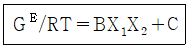
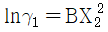
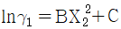
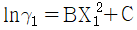
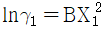
(정답률: 49%)
11. 라울(Raoult)의 법칙을 옳게 나타낸 것은?
- 중압이상에서만 적용될 수 있다.
- 계를 이루는 성분들이 화학적으로 서로 다른 경우에만 근사적으로 유효할 수 있다.
- 증기압을 모르고 있는 성분들에도 적용할 수 있다.
- 적용온도는 임계온도 이하여야 한다.
(정답률: 59%)
12. 2단 압축기를 사용하여 1기압의 공기를 7기압까지 압축시킬 때 동력소요를 최저로 하기 위해서는 1단 압축기 출구 압력은 약 얼마로 해야 하는가?
- 4기압
- 3.5기압
- 2.6기압
- 1.1기압
(정답률: 55%)
13. 발열반응인 경우 표준 엔탈피 변화(△H0)는 (-)의 값을 갖는다. 이 때 온도 증가에 따라 평형상수(K)는 어떻게 되는가? (단, 현열은 무시한다.)
- 증가한다.
- 감소한다.
- 감소했다 증가한다.
- 증가했다 감소한다.
(정답률: 66%)
14. 다음의 상태식을 따르는 기체 1mol 을 처음 부피 Vi로부터 Vf로 가역등온 팽창 시켰다면 이 때 이루어진 일(work)의 크기는 얼마인가? (단, b는 0 ＜ b ＜ V 인 상수이다.)
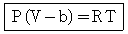
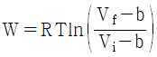
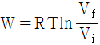
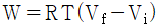
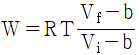
(정답률: 71%)
15. 다음 중 평형(Equilibrium)에 대한 설명으로 가장 적절하지 않은 것은?
- 평형은 변화가 전혀 없는 상태이다.
- 평형을 이루는데 필요한 독립변수의 수는 깁스 상률(Gibbs Phase Rule)에 의하여 구할 수있다.
- 기-액 상평형에서 단일 성분일 경우에는 온도가 결정되면 압력은 자동으로 결정이 된다.
- 여러 개의 상이 평형을 이룰 때 각 상의 화학포텐셜은 모두 같다.
(정답률: 69%)
16. 열역학 모델을 이용하여 상평형 계산을 수행하려고 할 때 응용 계에 대한 모델의 조합이 적합하지 않은 것은?
- 물 속의 이산화탄소의 용해도 : 헨리의 법칙
- 메탄과 에탄의 고압 기ㆍ액 상평형 : SRK(Soave/Redlich/Kwong) 상태방정식
- 에탄올과 이산화탄소의 고압 기ㆍ액 상평형 : WILSON 식
- 메탄올과 헥산의 저압 기ㆍ액 상평형 : NRTL(Non-Random-Two-Liquid)식
(정답률: 60%)
17. 부피팽창율과 등온압축률이 모두 0인 비압축성 유체의 성질이 아닌 것은?
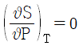
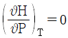
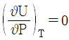
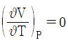
(정답률: 38%)
18. 평형상태에 대한 설명 중 옳은 것은?
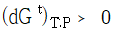
가 성립한다.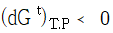
가 성립한다.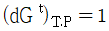
이 성립한다.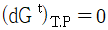
이 성립한다.
(정답률: 73%)
19. 크기가 동일한 3개의 상자 A, B, C 에 상호작용이 없는 입자 10개가 각각 4개, 3개, 3개씩 분포되어 있고, 각 상자들은 막혀 있다. 상자들 사이의 경계를 모두 제거하여 입자가 고르게 분포되었다면 통계 열역학적인 개념의 엔트로피 식을 이용하여 경계를 제거하기 전후의 엔트로피변화량은 약 얼마인가? (단, k 는 Boltzmann 상수이다.)
- 8.343k
- 15.324k
- 22.321k
- 50.024k
(정답률: 58%)
20. 그림과 같은 공기표준 오토사이클의 효율을 옳게 나타낸 식은? (단, a 는 압축비 이고, r 은 비열비(Cp/Cv) 이다.)
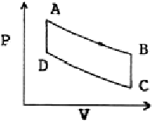
- 1-ar
- 1-ar-1
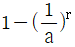
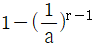
(정답률: 74%)
2과목: 단위조작 및 화학공업양론
21. 다음 중 에너지를 나타내지 않는 것은?
- 부피×압력
- 힘×거리
- 몰수×기체상수×온도
- 열용량×질량
(정답률: 64%)
22. 100℃ 의 물 1500g 과 20℃ 의 물 2500g을 혼합하였을 때의 온도는 몇 ℃ 인가?
- 20
- 30
- 40
- 50
(정답률: 63%)
23. 32℃, 760mmHg 에서 공기가 300m3 의 용기 속에 들어있다. 이 때 산소가 차지하는 분압은? (단, 공기 중 산소의 부피는 21% 이다.)
- 120mmHg
- 160mmHg
- 200mmHg
- 380mmHg
(정답률: 67%)
24. 37wt% HNO3용액의 노르말(N) 농도는? (단, 이 용액의 비중은 1.227 이다.)
- 6
- 7.2
- 12.4
- 15
(정답률: 54%)
25. 다음 중 증기압을 추산(推算)하는 식은?
- Clausius - Clapeyron 의 식
- Bernoulli 식
- Redlich-Kwong 식
- Kirchhoff 식
(정답률: 65%)
26. 다음 화학방정식으로부터 CH4의 표준생성열을 구하면 얼마인가?
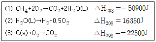
- -12⑤0J
- -9470J
- -6890J
- -4300J
(정답률: 61%)
27. 수소 11vol% 와 산소 89vol% 로 이루어진 혼합기체가 30℃, 737mmHg 상태에서 나타내는 밀도(g/L)는? (단, 기체는 모두 이상 기체라 가정한다.)
- 1.12g/L
- 1.25g/L
- 1.35g/L
- 1.42g/L
(정답률: 63%)
28. 어떤 가스의 조성이 부피 비율로 CO2 40%, C2H4 20%, H2 40% 이라면 이 가스의 평균 분자량은?
- 23
- 24
- 25
- 26
(정답률: 68%)
29. 부피로 아세톤 15vol% 를 함유하고 있는 질소와 아세톤의 혼합가스가 있다. 20℃, 750mmHg 에서의 아세톤의 비교포화도는? (단, 20℃ 에서의 아세톤의 증기압은 185mmHg 이다.)
- 45.98%
- 53.90%
- 57.89%
- 60.98%
(정답률: 36%)
30. 펌프의 동력이 150kgfㆍm/s 일 때 이 펌프의 동력은 몇 마력(hp)에 해당하는가?
- 1.97
- 5.36
- 9.2
- 15
(정답률: 49%)
31. 추출에서 추료(feed)에 추제(extracting solvent)를 가하여 잘 접촉시키면 2상으로 분리된다. 이 중 불활성 물질이 많이 남아 있는 상을 무엇이라고 하는가?
- 추출상(extract)
- 추잔상(raffinate)
- 추질(solute)
- 슬러지(sludge)
(정답률: 71%)
32. 25%의 수분을 포함한 고체 100kg을 수분함량이 1%가 될 때까지 건조시킬 때 제거되는 수분은 약 얼마인가?
- 8.08kg
- 18.06kg
- 24.24kg
- 32.30kg
(정답률: 61%)
33. 온도 20℃, 압력 760mmHg 인 공기 중의 수증기 분압은 20mmHg 이다. 이 공기의 습도를 건조 공기 kg 당 수증기의 kg 으로 표시하면 얼마인가? (단, 공기의 분자량은 30 으로 한다.)
- 0.016
- 0.032
- 0.048
- 0.064
(정답률: 60%)
34. 1기압, 300℃ 에서 과열수증기의 엔탈피는 약 몇 kcal/kg인가? (단, 1기압에서 증발잠열은 539kcal/kg, 수증기의 평균비열은 0.45kcal/kgㆍ℃ 이다.)
- 190
- 250
- 629
- 729
(정답률: 41%)
35. 상대휘발도에 관한 설명 중 틀린 것은?
- 휘발도는 어느 성분의 분압과 몰분율의 비로 나타낼 수 있다.
- 상대휘발도는 2물질의 순수성분 증기압의 비와 같다.
- 상대휘발도가 클수록 증류에 의한 분리가 용이하다.
- 상대휘발도는 액상과 기상의 조성에는 무관하다.
(정답률: 65%)
36. 가로 40cm, 세로 60cm 의 직사각형의 단면을 갖는 도관(duct)에 공기를 100m3/h 로 보낼 때의 레이놀즈수를 구하려고 한다. 이 때 사용될 상당직경(수력직경)은 얼마인가?
- 48cm
- 50cm
- 55cm
- 45cm
(정답률: 48%)
37. 다음 펌프 중 왕복 펌프가 아닌 것은?
- Piston 펌프
- Turbine 펌프
- Plunger 펌프
- Diaphragm 펌프
(정답률: 53%)
38. 다음 중 국부속도(local velocity)측정에 가장 적합한 것은?
- 오리피스미터
- 피토관
- 벤츄리미터
- 로터미터
(정답률: 53%)
39. 교반기 중 점도가 높은 액체의 경우에는 적합하지 않으나 저점도 액체의 다량 처리에 많이 사용되는 교반기는?
- 프로펠러(propeller)형 교반기
- 기본(ribbon)형 교반기
- 앵커(anchor)형 교반기
- 나선형(screw)형 교반기
(정답률: 64%)
40. 다중 효용증발기에 대한 급송방법 중 한 효용관에서 다른 효용관으로의 용액 이동이 요구되지 않는 것은?
- 순류식 급송(forward feed)
- 역류식 급송(backward feed)
- 혼합류식 급송(mixed feed)
- 병류식 급송(parallel feed)
(정답률: 56%)
3과목: 공정제어
41. 다음과 같은 블록선도에서 폐회로 응답의 시간상수 τ 에 대한 옳은 설명은?
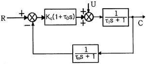
- τ1이 감소하면 증가한다.
- τ0이 감소하면 증가한다.
- Kc이 증가하면 감소한다.
- τm이 증가하면 감소한다.
(정답률: 35%)
42. Y=P1X±P2X의 블럭선도로 옳지 않은 것은?
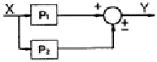
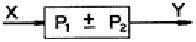
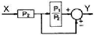
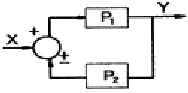
(정답률: 55%)
43. Routh법에 의한 제어계의 안정성 판별조건과 관계없는 것은?
- Routh array의 첫 번째 열에 전부 양(+)의 숫자만 있어야 안정하다.
- 특성방정식이 S에 대해 n차 다항식으로 나타나야 한다.
- 제어계에 수송지연이 존재하면 Routh법은 쓸 수 없다.
- 특성방정식의 어느 근이든 복소수축의 오른쪽에 위치할 때는 계가 안정하다.
(정답률: 55%)
44. 다음 중 잔류오차(offset)가 0 이 되는 제어기는?
- P - 제어기(비례 제어기)
- PI - 제어기
- PD - 제어기
- 해당 제어기는 없다.
(정답률: 60%)
45. 제어밸브 입출구 사이의 불평형 압력(unbalanced force)에 의하여 나타나는 밸브위치의 오차, 히스테리시스 등이 문제가 될 때 이를 감소시키기 위하여 사용되는 방법으로 가장 거리가 먼 것은?
- Cv가 큰 제어 밸브를 사용한다.
- 면적이 넓은 공압 구동기(pneumatic actuator)를 사용한다.
- 밸브 포지셔너(positioner)를 제어밸브와 함께 사용한다.
- 복좌형(double seated) 밸브를 사용한다.
(정답률: 53%)
46. 적분공정(G(s)=1/s)을 제어하는 경우에 대한 설명으로 틀린 것은?
- 비례제어만으로 설정값의 계단변화에 대한 잔류오차(offset)를 제거할 수 있다.
- 비례제어만으로 입력외란의 계단변화에 대한 잔류오차(offset)를 제거할 수 있다.(입력외란은 공정입력과 같은 지점으로 유입되는 외란)
- 비례제어만으로 출력외란의 계단변화에 대한 잔류오차(offset)를 제거할 수 있다.(출력이란은 공정출력과 같은 지점으로 유입되는 외란)
- 비례-적분제어를 수행하면 직선적으로 상승하는 설정값 변화에 대한 잔류오차(offset)를 제거할 수 있다.
(정답률: 44%)
47. 제어기의 와인드업(windup) 현상에 대한 설명 중 잘못된 것은?
- 이 문제를 해소하기 위한 기능은 antiwindup이라 부른다.
- Windup 이 해소되기까지 제어기는 사실상 제어 불능 상태가 된다.
- 제어기의 출력이 공정으로 바르게 전달되지 못할 때에 나타나는 현상이다.
- 제어기의 미분동작과 관련된 현상이다.
(정답률: 55%)
48. 다음 중 1차계공정(
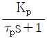
)의 특성이 아닌 것은?- 자율공정이다.
- 단위계단 입력의 경우, 공정출력의 초기의 기울기
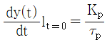
이다. - 공정이득이 증가하면 진동한다.
- 최종치의 63.2%에 도달할 때까지 걸린 시간이 시간상수이다.
(정답률: 44%)
49. 1차계의 단위계단응답에서 시간 t 가 2τ 일 때 퍼센트 응답은 약 얼마인가? (단, τ 는 1차계의 시간상수이다.)
- 50%
- 63.2%
- 86.5%
- 95%
(정답률: 57%)
50. 그림과 같은 닫힌 루프계에서 입력 R 에 대한 출력 Y 의 전달함수는?
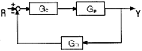
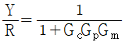
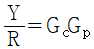
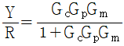
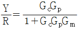
(정답률: 63%)
51.
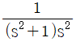
의 역변환으로 옳은 것은? (단, U(t)는 단위계단함수이다.)- (cost+1+t)U(t)
- (-sint+t)U(t)
- (-cost+1+t)U(t)
- (sint-t)U(t)
(정답률: 50%)
52. 다음 함수의 Laplace 변환은? (단, U(t)는 단위계단함수(unit step function)이다.)
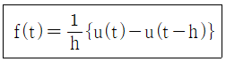
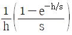
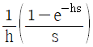
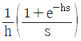
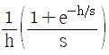
(정답률: 55%)
53. Bode 선도를 이용한 안정성 판별법 중 옳지 않은 것은?
- 위상 크로스오버 주파수(Phase crossover frequency)에서 AR 은 1보다 작아야 안정하다.
- 이득여유(Gain Margin)는 위상 크로스오버 주파수에서 AR 의 역수이다.
- 열린 루프에서 안정한 공정 전달함수에 대해서만 적용 가능하다.
- 이득 크로스오버 주파수(Gain crossover frequency)에서 위상각은 -180도보다 커야 안정하다.
(정답률: 38%)
54. 증류탑의 응축기와 재비기에 수은기둥 온도계를 설치하고 운전하면서 한 시간마다 온도를 읽어 다음 그림과 같은 데이터를 얻었다. 이 데이터와 수은기둥 온도 값 각각의 성질로 옳은 것은?
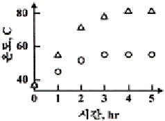
- 연속(continuous), 아날로그
- 연속(continuous), 디지털
- 이산시간(discrete-time), 아날로그
- 이산시간(discrete-time), 디지털
(정답률: 58%)
55. 특성방정식이 s3+6s2+11s+6=0인 제어계가 있다. 이 제어계의 안정성은?
- 안정하다.
- 불안정하다.
- 불충분 조건이 있다.
- 식의 성립이 불가하다.
(정답률: 58%)
56.
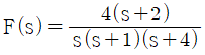
인 신호의 최종값(final value)은?- 2
- ∞
- 0
- 1
(정답률: 57%)
57. 개회로 전달함수의 phase lag 가 180˚ 인 주파수에서 Amplitude ratio(AR)가 어느 범위일 때 폐회로가 안정한가?
- AR ＜ 1
- AR ＜ 1/0.707
- AR ＞ 1
- AR ＞ 0.707
(정답률: 32%)
58. 단면적이 A, 길이가 L 인 파이프 내에 평균속도 U 로 유체가 흐르고 있다. 입구 유체온도와 출구 유체온도 사이의 전달함수는? (단, 파이프는 단열되어 파이프로부터 유체로 열전달은 없다.)
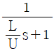
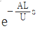
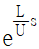
(정답률: 40%)
59. 비례 제어기를 이용하는 어떤 폐루프 시스템의 특성방정식이 와 같이 주어진다. 다음 중 진동응답이 예상되는 경우는?
- Kc=-1.25
- Kc=0
- Kc=0.25
- Kc에 관계없이 진동이 발생된다.
(정답률: 47%)
60. 시간지연(delay)이 포함되고 공정이득이 1인 1차 공정에 비례제어기가 연결되어 있다. 임계주파수에서 각속도 ω 의 값이 0.5rad/min 일 때 이득여유가 1.7 이 되려면 비례제어 상수(Kc)는? (단, 시상수는 2분이다.)
- 0.83
- 1.41
- 1.70
- 2.0
(정답률: 33%)
4과목: 공업화학
61. Le blance법의 원료와 제조 물질을 옳게 설명한 것은?
- 식염에서 탄산칼슘 제조
- 식염에서 탄산나트륨 제조
- 염화칼슘에서 탄산칼슘 제조
- 염화칼슘에서 탄산나트륨 제조
(정답률: 49%)
62. 솔베이법을 이용한 소다회 제조에 있어서 사용되는 기본원료는?
- HCl, H2O, NH3, H2CO3
- NaCl, H2O2, CaCO3, H2SO4
- NaCl, H2O, NH3, CaCO3
- HCl, H2O2, NH3, CaCO3, H2SO4
(정답률: 55%)
63. 요소비료 1ton 을 합성하는데 필요한 CO2의 원료로 탄산칼슘 85% 를 포함하는 석회석을 사용한다면 석회석이 약 몇 ton 필요한가?
- 0.96
- 1.96
- 2.96
- 3.96
(정답률: 41%)
64. 반도체 제조 공정에서 감광제를 구성하는 주요 기본요소가 아닌 것은?
- 고분자
- 용매
- 광감응제
- 현상액
(정답률: 46%)
65. 다음 중 에틸렌으로부터 얻는 제품으로 가장 거리가 먼 것은?
- 에틸벤젠
- 아세트알데히드
- 에탄올
- 염화알릴
(정답률: 60%)
66. phthalic anhydride 를 합성하기 위한 기본 원료는?
- toluene
- o-xylene
- m-xylene
- p-xylene
(정답률: 32%)
67. 아세틸렌을 출발물질로 하여 염화구리와 염화암모늄 수용액을 통해 얻은 모노비닐아세틸렌과 염산을 반응시키면 얻는 주생성물은?
- 클로로히드린
- 염화프로필렌
- 염화비닐
- 클로로프렌
(정답률: 36%)
68. 황산용액의 포화조에 암모니아 가스를 주입하여 황산암모늄을 제조할 때 85wt% 황산 1000kg 을 암모니아 가스와 반응시키면 약 몇 kg 의 황산암모늄 결정이 석출되겠는가? (단, 반응온도에서 황산암모늄 용해도는 97.5g/100gㆍH2O 이며, 수분의 증발 및 분리공정 중 손실은 없다.)
- 788.7
- 895.7
- 998.7
- 1095.7
(정답률: 33%)
69. 말레산 무수물을 벤젠의 공기산화법으로 제조하고자 한다. 이 때 사용되는 촉매는 무엇인가?
- 바나듐펜톡사이드(오산화바나듐)
- Si-Al2O3 담체로 한 Nickel
- PdCl2
- LiH2PO4
(정답률: 53%)
70. 모노글리세라이드를 옳게 설명한 것은?
- 양쪽성 계면활성제이다.
- 비이온 계면활성제이다.
- 양이온 계면활성제이다.
- 음이온 계면활성제이다.
(정답률: 35%)
71. 다음의 인산칼슘 중 수용성 성질을 가지는 것은?
- 인산 1 칼슘
- 인산 2 칼슘
- 인산 3 칼슘
- 인산 4 칼슘
(정답률: 56%)
72. 순수 HCl 가스를 제조하는 방법은?
- 질산 분해법
- 흡착법
- Hargreaves법
- Deacon법
(정답률: 50%)
73. 아세톤을 염산 존재 하에서 페놀과 반응시켰을 때 생성되는 주 물질은?
- 아세토페논
- 벤조페논
- 벤질알코올
- 비스페놀 A
(정답률: 54%)
74. 일반적으로 물의 순도는 비저항 값으로 표시한다. 이 때 사용되는 비저항의 단위로 옳은 것은?
- Ωㆍcm
- Ω/cm
- Ωㆍs
- Ω/s
(정답률: 45%)
75. 다음 중 연료전지의 형태에 해당하지 않는 것은?
- 인산형 연료전지
- 용융탄산염 연료전지
- 알칼리 연료전지
- 질산형 연료전지
(정답률: 50%)
76. 탄화수소의 분해에 대한 설명 중 옳지 않는 것은?
- 열분해는 자유라디칼에 의한 연쇄반응이다.
- 열분해는 접촉분해에 비해 방향족과 이소파라핀이 많이 생성된다.
- 접촉분해에서는 촉매를 사용하여 열분해보다 낮은 온도에서 분해시킬 수 있다.
- 접촉분해에서는 방향족이 올레핀보다 반응성이 낮다.
(정답률: 47%)
77. LPG 에 대한 설명 중 틀린 것은?
- C3, C4 의 탄화수소가 주성분이다.
- 상온, 상압에서는 기체이다.
- 그 자체로 매우 심한 독한 냄새가 난다.
- 가압 또는 냉각시킴으로써 액화한다.
(정답률: 64%)
78. 반도체에 대한 일반적인 설명 중 옳은 것은?
- 진성반도체의 경우 온도가 증가함에 따라 전기전도도가 감소한다.
- p형 반도체는 Si 에 V족 원소가 첨가된 것이다.
- 불순물 원소를 첨가함에 따라 저항이 감소한다.
- LED(light emitting diode)는 n형 반도체만을 이용한 전자소자이다.)
(정답률: 44%)
79. 반도체 공정에 대한 설명 중 틀린 것은?
- 감광반응 되지 않은 부분을 제거하는 공정을 에칭이라 하며, 건식과 습식으로 구분할 수있다.
- 감광성 고분자를 이용하여 실리콘웨이퍼에 회로패턴을 전사하는 공정을 리소그래피(lithography)라고 한다.
- 화학기상증착법 등을 이용하여 3족 또는 6족의 불순물을 실리콘웨이퍼내로 도입하는 공정을 이온주입이라 한다.
- 웨이퍼 처리공정 중 잔류물과 오염물을 제거하는 공정을 세정이라 하며 건식과 습식으로 구분할 수 있다.
(정답률: 60%)
80. 파장이 600nm 인 빛의 주파수는?
- 3×1010 Hz
- 3×1014 Hz
- 5×1010 Hz
- 5×1014 Hz
(정답률: 46%)
5과목: 반응공학
81. 반응물질 A 는 2L/min 유속으로 부피가 2L 인 혼합흐름 반응기에 공급된다. 이 때 A의 출구농도 CAP=0.02mol/L이고 초기농도 CAO=0.2mol/L일 때 A 의 반응속도는?
- 0.045mol/Lㆍmin
- 0.062mol/Lㆍmin
- 0.18mol/Lㆍmin
- 0.1mol/Lㆍmin
(정답률: 52%)
82. 직렬반응 A → R → S 의 각 단계에서 반응속도상수가 같으면 회분식 반응기 내의 각 물질의 농도는 반응시간에 따라서 어느 그래프처럼 변화하는가?
(정답률: 55%)
83. 자동촉매반응(autocatalytic reaction)에 대한 설명으로 옳은 것은?
- 전화율이 작을 때는 관형흐름 반응기가 유리하다.
- 전화율이 작을 때는 혼합흐름 반응기가 유리하다.
- 전화율과 무관하게 혼합흐름 반응기가 항상 유리하다.
- 전화율과 무관하게 관형흐름 반응기가 항상 유리하다.
(정답률: 51%)
84. 평균체류 시간이 같은 관형 반응기와 혼합반응기에서 A→R(-rA=kCAn)로 표시되는 화학 반응이 일어날 때 관형 반응기의 전화율 Xp와 혼합 반응기의 전화율 Xm에 관한설명으로 옳은 것은? (단, n 은 반응차수이다.)
- 반응차수 n 에 관계없이 항상 Xp는 Xm보다 크다.
- 반응차수 n 에 관계없이 항상 Xm은 Xp보다 크다.
- 반응차수 n 이 0보다 크면 Xp는 Xm보다 크다.
- 반응차수 n 이 0보다 크면 Xm는 Xp보다 크다.
(정답률: 42%)
85. 다음 두 액상 반응이 동시에 진행될 때 어떻게 반응시켜야 부반응을 억제할 수 있는가?
(정답률: 59%)
86. 회분식 반응기 내에서의 균일계 1차 반응 A→R 에 대한 설명으로 가장 부적절한 것은?
- 반응속도는 반응물 A 의 농도에 정비례 한다.
- 반응률 XA는 반응시간에 정비례 한다.
- 와 반응시간간의 관계는 직선으로 나타난다.
- 반응속도 상수의 차원은 시간의 역수이다.
(정답률: 49%)
87. 기상반응 2A→R+2S 가 플러그흐름반응기(PFR)에서 A의 전화율 90% 까지 반응하는데 공간속도 1min-1가 필요하였다. 공간시간(τ, min)과 평균체류시간(t, min)은?
- τ = 1, t ＞ 1
- τ = 1, t ＜ 1
- τ ＞ 1, t = 1
- τ ＞ 1, t ＞ 1
(정답률: 46%)
88. 두 개의 CSTR을 직렬 연결했을 때, 반응기의 최적부피에 대한 설명으로 가장 거리가 먼것은?
- 최적부피는 반응속도에 의존한다.
- 1차 반응이면 부피가 같은 반응기를 사용한다.
- 차수가 1보다 크면 큰 반응기를 먼저 놓는다.
- 최적부피는 전화율에 의존한다.
(정답률: 50%)
89. 부피 V=1L 인 혼합 반응기에 A용액 (CA0=0.1mol/L)만 1L/min 로 들어가서 A와 B가 CAf=0.02mol/L, CBf=0.04mol/L의 상태로 흘러나갈 때 B의 생성반응 속도는 몇 mol/Lㆍmin 인가?
- -0.04
- -0.02
- 0.04
- 0.02
(정답률: 43%)
90. 정압반응에서 처음에 80% 의 A를 포함하는(나머지 20% 는 불활성물질) 반응 혼합물의 부피가 2min 에 20% 감소한다면 기체반응 2A →R 에서 A의 소모에 대한 1차 반응 속도상수는 약 얼마인가?
- 0.147min-1
- 0.247min-1
- 0.347min-1
- 0.447min-1
(정답률: 28%)
91. 반응식이 2A +2B → R 일 때 각 성분에 대한 반응속도식의 관계로 옳은 것은?
- -rA=-rB=rR
- -2rA=-2rB=rR
- (-rA)2=(-rB)2=rR
(정답률: 61%)
92. 어떤 회분식 반응기에서 전화율을 90% 까지 얻는데 소요된 시간이 4시간이었다고 하면, 3m3/min 을 처리하여 같은 전화율을 얻는데 필요한 반응기의 부피는 얼마인가?
- 620m3
- 720m3
- 820m3
- 920m3
(정답률: 58%)
93. 반응 A → 생성물 의 속도식이 로 주어질 때 초기농도 CA0가 되는데 걸리는 t1/2시간 을 반감기라 한다. 인 경우에는 몇 차반응인가?
- n=1
- n=2
- n=3
- n=1/2
(정답률: 60%)
94. Arrhenius law 에 따라 작도한 다음 그림 중에서 평행반응(parallel reaction)에 가장 가까운 그림은?
(정답률: 48%)
95. 반응기 중 체류시간 분포가 가장 좁게 나타난 것은?
- 완전 혼합형 반응기
- recycle 혼합형 반응기
- recycle 미분형 반응기(plug type)
- 미분형 반응기(plug type)
(정답률: 49%)
96. 완전 혼합이 이루어지는 혼합 반응기에 관한 설명 중 옳은 것은?
- 혼합반응기의 내부농도는 출구농도 보다 높다.
- 혼합반응기의 내부농도는 출구농도 보다 낮다.
- 혼합반응기의 내부농도는 출구농도와 일치 한다.
- 혼합반응기의 내부농도는 출구농도와 무관하다.
(정답률: 60%)
97. 두 1차 반응이 등온회분식 반응기에서 다음과 같이 진행되었다. 반응시간이 60분일 때 반응물 A가 90% 분해되어서 S에 대한 R의 몰 비가 10.1 로 생성되었다. 최초의 반응시에 R과 S가 없었다면 k1 은 얼마이겠는가?
- 0.0321/min
- 0.0333/min
- 0.0366/min
- 0.0384/min
(정답률: 32%)
98. A 가 R 이 되는 효소반응이 있다. 전체 효소 농도를 [E0], 미카엘리스(Michaelis)상수를 [M]이라고 할 때 이 반응의 특징에 대한 설명으로 틀린 것은?
- 반응속도가 전체 효소 농도 [E0] 에 비례한다.
- A 의 농도가 낮을 때 반응속도는 A 의 농도에 비례한다.
- A 의 농도가 높아지면서 0차 반응에 가까워진다.
- 반응속도는 미카엘리스 상수 [M] 에 비례한다.
(정답률: 47%)
99. 다음의 액체상 1차 반응이 plug flow 반응기(PFR)와 mixed flow 반응기(MFR)에서 각각 일어난다. 반응물 A 의 전화율을 똑같이 80%로 할 경우 필요한 MFR 의 부피는 PFR 부피의 몇 약 배인가?
- 5.0
- 2.5
- 0.5
- 0.2
(정답률: 52%)
100. A→2R 인 기체상 반응은 기초 반응(elementary reaction)이다. 이 반응이 순수한 A로 채워진 부피가 일정한 회분식(batch) 반응기에서 일어날 때 10분 반응 후 전화율이 80% 이었다. 이 반응을 순수한 A 를 사용하며, 공간시간(space time)이 10분인 mixed flow 반응기에서 일으킬 경우 A 의 전화율은 약 얼마인가?
- 91.5%
- 80.5%
- 65.5%
- 51.5%
(정답률: 24%)